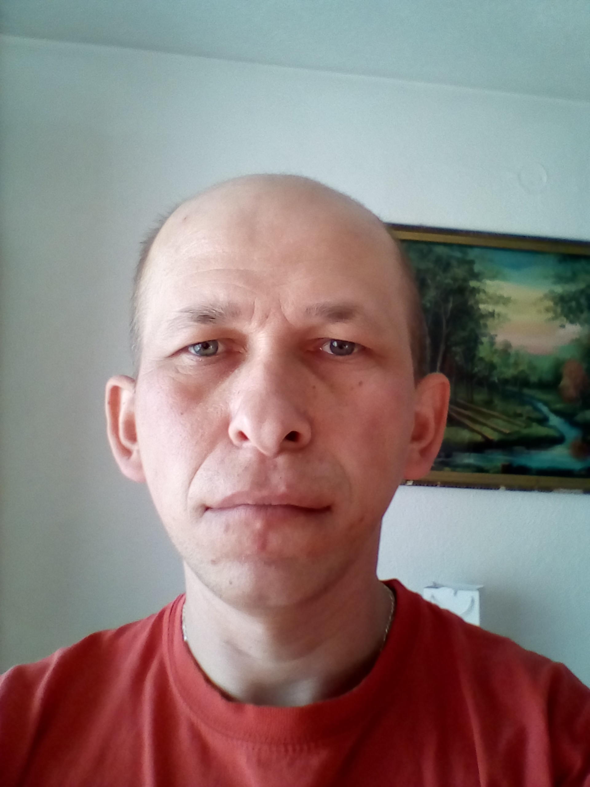

Am crescut în comuna Ditrău, în județul Harghita. Am absolvit la liceul Grup Școlar Industrial "Puskás Tivadar", profesia Electronică și Automatizări, în anul 2005. Subiectele principale erau matematica, informatica, fizica, technologie.
În prezent lucrez ca vânzător la un magazin de materiale de constructii, la firma SC. Fortrans Detroit SRL în localitatea Ditrău.
În decembrie 2019, am început să învăț creare web-siteuri la cursul online CodeBerry. Cursul este accesibil în mai multe limbi, dar cel mai bun lucru este că pot învăța in ritmul meu. Iar dacă blochez undeva, este o comunitate bună unde pot cere ajutor.
Locul de muncă:
SC. Fortrans Detroit SRL.
Studii:
Grup Școlar Industrial "Puskás Tivadar", CodeBerry
